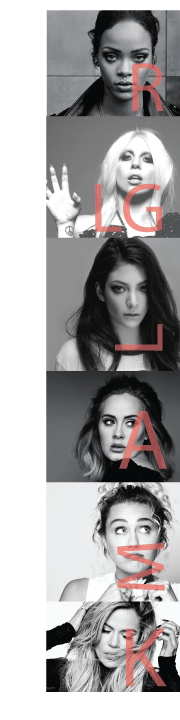

x
x
x

RIHANNA has spoken about the fashion industry being full of very thin women and how this negatively affects the body image of women over the world. She states that women should not allow the fashion industry to dictate to them what size to be. She has also stated that for most women and girls, size zero is not healthy or attractive and therefore should not be sought after. Rihanna urges girls not to feel pressure from the fashion industry to be thin.
Recently, LADY GAGA has put on 25 pounds, and the media has descended upon that information in full force. Online sites have posted unflattering photos, focusing the spotlight on Gaga’s weight change. But the pop star is not taking the attacks lying down. Instead, she’s voicing her opinions on the forum of her LittleMonsters.com website.
LORDE, recently shared unphotoshopped pictures of herself to remind her fans that “flaws are ok”. The pop singer then continued her campaign to prove to teenage girls that she is not perfect by posting selfies of her face covered in zit cream. Lorde has at least 1.3 million followers on Twitter, so she is in a good position to share positive body image messages.
ADELE is a popular singer who, despite receiving criticism from Karl Lagerfeld on being “a little too fat,” has said she does not feel pressure to be thin and advises young girls to appreciate their bodies.
MILEY CYRUS was criticized for being full figured in 2011 and has since spoken out publicly about what she refers to as disruptive beauty standards. She has stated that she loves her body, and that by calling her overweight, critics are being a destructive force for the body image of women.
KHLOE KARDASHIAN is another celebrity who is very proud of her body despite struggling previously to accept her bodyweight. She states that she is learning how to love herself and not listen to the standards set by other people. Khloe has also stated that she does not think that you should ever criticize another person’s weight, and that a person’s weight does not define them.
"You have to just accept your body. You may not love it all the way, but you just have to be comfortable with it, comfortable with knowing that that’s your body. You just want something else that someone else has, but that doesn’t mean what you have isn’t beautiful, because people always want what you have, and you always want what they have — no one is ever 100 per cent like, ‘Yes, I'm the bomb dot com — from head to toe!""
“No matter how much success you have, no matter how many opportunities, fame, fortune, no matter how many accept you to your face, the person that really needs to accept you is you.”
"Two photos from today, one edited so my skin is perfect and one real. Remember flaws are ok."
“I enjoy being me; I always have done. I’ve seen people where it rules their lives, you know, who want to be thinner or have bigger boobs, and it wears them down. And I don’t want that in my life."
"From the time I was 11, it was, ‘You’re a pop star! That means you have to be blonde, and you have to have long hair, and you have to put on some glittery tight thing.’ Meanwhile, I’m this fragile little girl playing a 16-year-old in a wig and a ton of makeup. It was like ‘Toddlers & Tiaras.""
"I used to be someone that they would label as 'plus-size,' and f— that — I don't want to be called that! I'm a woman with curves.""